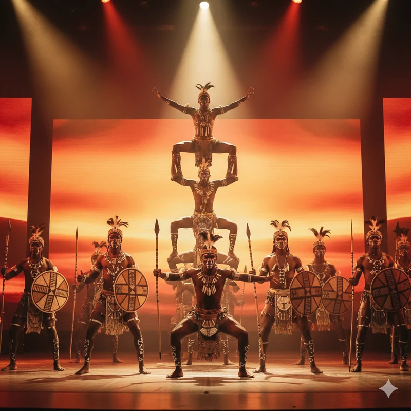

01
Sahne şovları40 dakikaSEZONU BİRLİKTE KURALIM
01 HAFTA / 07 GECEBir hafta,
yedi farklı gece.
Dans, akrobasi, canlı müzik ve tema partilerini buluşturan örnek bir hafta. Otelinizin programına göre birlikte değiştirelim.
02
Canlı müzik120 dakikaSalı
03
Sahne şovları40 dakikaÇarşamba
04
Sahne şovları40 dakikaPerşembe
05
Canlı müzik120 dakikaCuma
06
Tema partileriKonsept programCumartesi
07
Sahne şovları40 dakikaPazar
Örnek programdır. Tarih, ekip uygunluğu ve teknik koşullar birlikte netleştirilir.
TEMA GECELERİ
BİR GECE, BİR HİKÂYEBir konsept.
Birlikte akan gösteriler.
Katalogdan bir araya getirdiğimiz iki gece önerisi. Seçkiyi taslağınıza ekleyin; akışı ve prodüksiyonu birlikte planlayalım.
 Konsept önerisi
Konsept önerisiLatin Gecesi
Latin dansından partiye.
Colombia Rumbera’nın dans gösterisini White Party ile devam eden bir akşamda buluşturan program önerisi.

Konsept önerisiAfrika Gecesi
Akrobasiyle yükselen bir gece.
Kenyan Acrobats ve African Warriors gösterilerini aynı gecenin akışında değerlendiren bir sahne seçkisi.
Bunlar örnek birleşimlerdir. Müzik, dekor, gösteri sırası, süre ve ekip uygunluğu tesisinize göre netleştirilir.
BİRLİKTE PLANLAYALIM
BİRLİKTESıradaki güzel anı
birlikte hazırlayalım.
Bir sezon. Bir gece. Bir fikir.
ZAYA ile hayata geçsin.
BİR MERHABAYLA BAŞLAR.
Sezonunuzu birlikte
konuşalım.
TELEFON+90 532 283 40 79
WHATSAPPProgramınızı konuşalım ↗Gösteri seçimi ve sezon planlaması